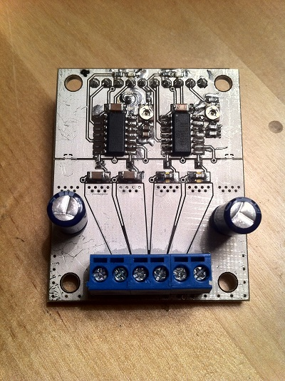
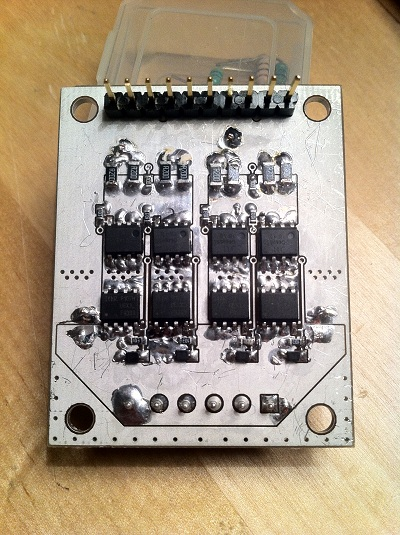
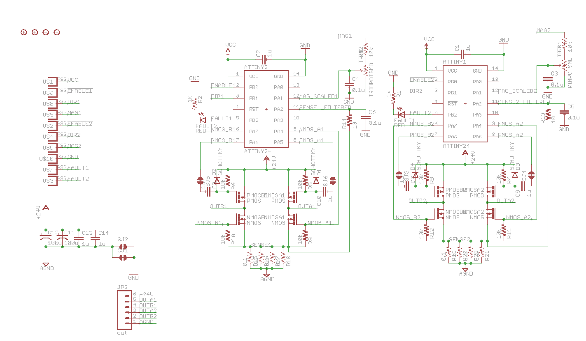

TinyWrench is a motor controller project that tries to mimic everything that a dedicated motor controller chip does in software on an ATTiny, as cheaply as possible. The controller has no active level shifters or gate drivers, just some MOSFETs, ATTinys, and passive components. The current incarnation of TinyWrench packs two ATTiny24s and two H-bridges that can handle ~9 amps each onto a board about 1.5 inches by 2 inches. The software drives motors in constant-current mode using a constant-off-time chopper drive, functioning similarly to an Allegro A4988 except with a sign+magnitude interface instead of step+direction.
(Hi Hackaday! I've added a discussion page here in case anyone has questions)
Front of board with ATTiny24s (one per bridge), current level trimpots, and high-side gate drive coupling capacitors:

Back of board with paralleled sense resistors, two h-bridges, gate pull-up/down resistors, and high-side gate clamp diodes. High-side fets are IRF9393TRPBF, low side are DMG4496SSS:

Messy schematic:

This project is still __very early__ in development, but the prototype boards work and I've tested them by driving some NEMA 23 stepper motors at a few amps of current. Eagle schematics and code are here, but beware of dragons as it's a hacky mess - wrench.zip
Also, since this is a pretty unusual way to design a motor controller, there are some interesting pros and cons:
Pros -
- The drive mode is completely tweakable, since it's all in software. The current code does all the right things for driving h-bridges that an Allegro motor controller chip does - controllable dead time, constant off-time drive mode, blanking intervals, fault detection, and so forth. Changing the drive mode and timings to suit different mosfet or motor configurations is easy.
- The board is made with relatively easy-to-find parts, and those parts are easily replaceable - accidentally frying a transistor doesn't mean you have to throw the board out.
- Despite the number of parts, it's still pretty cheap - under $8 for the above board in small quantities. Small production runs could be done for around $5 each.
Cons -
- All the discrete parts means it's quite a bit larger than a comparable Pololu driver board, around 3-4x.
- The ATTiny doesn't have very powerful output pins, so the size (in total gate charge) of the mosfet it can drive is limited to around 20-40 nanocoulombs and the switching time is somewhere around 100-200 nanoseconds (5x slower than a dedicated gate driver). You're not going to be driving a Battlebot with one of these things, but Makerbots and RepRaps and small RC vehicles would be fine.
- The current control signal is an analog value that needs to be generated by a DAC of some sort; it's not a direct replacement for a Pololu stepper driver. I'll likely make an adapter board of some sort that will allow a TinyWrench to be controlled directly by a RepRap or Makerbot, but I'm not quite there yet.
- The high-side drive is capacitively-coupled, which means that the maximum allowable duty cycle is slightly below 100% for reasons I won't get into here - this limit is enforced in software.
- The current layout has some overlap between the ATTiny programming pins and the bridge drive pins - to reprogram it you have to clear a solder jumper, which gets to be annoying after a few repetitions. Future boards will fix this.